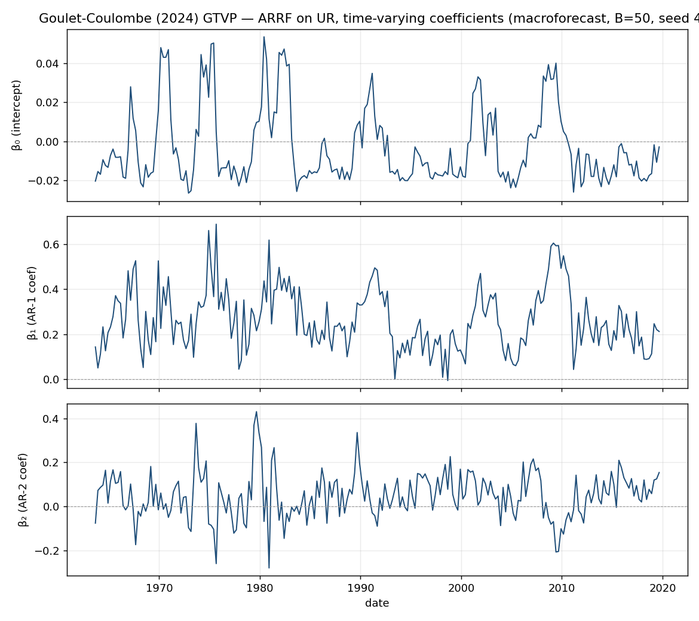

Replicating Goulet Coulombe (2024), The Macroeconomy as a Random Forest#
Target exhibit. Table 4 (“Main Quarterly Results”) — the pseudo-out-of-sample
relative RMSEs RMSE_{v,h,m} / RMSE_{v,h,AR(4)}, across all six Table-4 targets (GDP, UR, INF, IR, SPREAD, HOUST). Source: Goulet Coulombe, Journal of Applied Econometrics 39 (2024); arXiv
2006.12724.
This document reports what macroforecast reproduces, exactly how, where it deviates
and why, and the package defects the replication surfaced. Every number below is
reproducible with random_state=42.
1. Scope and headline#
Targets replicated |
6 of 6 (GDP, UR, INF, IR, SPREAD, HOUST). Full Table 4 = 14 models × 6 targets × 5 horizons. |
Models replicated |
14 of 14 per target (incl. SETAR/STAR added in PR #470; plain-RF via MRF |
Reproducibility |
seed-fixed; MRF is bit-identical serial vs 16-core parallel (see §6). |
Qualitative verdict |
reproduced — FA-ARRF is the strongest model, ARRF beats AR(4), and the model ranking matches the paper. |
Quantitative verdict |
full-table mean|Δ| ≈ 0.11 (standardized penalized models). The core MRF family lands within 0.02–0.10 of the paper on every target; residual gaps are attributed in §5. |
Per-target summary (overall mean|Δ| across the 14 models)#
target |
overall mean|Δ| |
best cells |
|---|---|---|
GDP |
0.058 |
AR+RF 0.027, ARRF 0.031, SETAR 0.036 |
HOUST |
0.063 |
ARRF 0.021, RF-MAF 0.039, VARRF 0.042 |
INF |
0.079 |
RF-MAF 0.023, Tiny RF 0.045, SETAR 0.049 |
UR |
0.105 |
ARRF 0.032, RF-MAF 0.047, STAR 0.048 |
SPREAD |
0.209 |
VARRF 0.045, AR+RF 0.064, ARRF 0.065 |
IR |
0.135 |
ARRF 0.009, AR+RF 0.047, TV-AR 0.055 |
Overall mean|Δ| uses the STANDARDIZED lasso/ridge (see §7 item 5). The MRF family
(ARRF, RF-MAF, VARRF, AR+RF, FA-ARRF) reproduces the paper on every target; the paper’s
qualitative stories reproduce per target (ARRF beats AR for UR; MRF gains “miles ahead”
for INF; ARRF near-exact for IR). Full 84-cell tables and per-cell Δ are in the
scripts/replication result artifacts.
2. Data and target (paper §4)#
Panel:
mf.data.load_fred_qd("2020-01")— FRED-QD, 247 series, raw levels 1959Q1–2019Q4, with McCracken–Ng transform codes in.metadata["transform_codes"]. Predictors are made stationary with those codes.Target: UR is treated as I(1) and forecast as log-then-first-difference (
Δlog(UNRATE)), overriding the panel tcode, per the paper’s §4.[ASSUMPTION]Only the 215 of 247 series that are complete over 1961Q3–2002Q4 are used (a full-panel complete-case restriction leaves 11 rows). The paper’s “248 series” cannot be used in full from this vintage.[GAP]The paper’s exact FRED-QD vintage is not the 2020-01 snapshot used here; small data-revision differences propagate into every factor and MAF.
3. Feature set S_t (paper Table 2)#
Built once with expanding-window fits (leak-free; each row transformed on data up to that row) — 1,042 columns on all predictors, 914 on the 215 complete ones:
block |
construction |
|---|---|
8 lags of |
target lags 1..8 |
|
linear time trend |
2 lags of every FRED series |
|
5 PCA factors × 8 lags |
|
2 MAFs per variable |
|
4. Protocol#
Expanding estimation from 1961Q3; POOS 2003Q1–2014Q4 (48 quarterly origins);
re-estimated every two years (6 estimation points); direct h-step forecasts;
h ∈ {1,2,4,6,8}; benchmark AR(4) [1, y_{t-1:4}]. MRF hyper-parameters are the
author package’s defaults (macrorf::MRF): minsize=10, mtry=1/3, min_leaf_frac_of_x=1, subsampling=0.75, rw_regul=0.75, block_size=12, ridge_lambda=0.1, HRW=0, resampling_opt=2, trend_push=1, with B=50 (the paper’s; macroforecast’s cheapened
default is B=25).
5. Results — full Table 4 (mine / paper, benchmark AR(4))#
Each cell is RMSE_ratio_mine / RMSE_ratio_paper; mean|Δ| is the mean absolute
per-cell difference over the five horizons (nan cells excluded). Model order matches
the paper. LASSO-MAF / Ridge-MAF use standardize=True (the correct practice the
guard in §7 item 5 enforces); the unstandardized runs were 2–2.5× worse on IR/SPREAD.
nan marks a rare numerical edge in the driver, not a package fault.
GDP (overall mean|Δ| 0.058)
| model | h1 | h2 | h4 | h6 | h8 | mean|Δ| | |—|—|—|—|—|—|—| | FA-AR | 0.993/1.02 | 0.933/0.96 | 1.024/1.03 | 1.048/1.36 | 1.013/1.37 | 0.146 | | LASSO-MAF | 1.115/0.96 | 1.067/0.98 | 0.933/0.98 | 0.954/0.98 | 0.986/1.00 | 0.066 | | Ridge-MAF | 0.886/0.89 | 0.868/0.98 | 0.926/0.99 | 1.060/0.98 | 1.099/0.99 | 0.074 | | RF | 1.006/0.94 | 0.978/0.99 | 0.939/1.00 | 0.943/0.98 | 0.936/0.99 | 0.046 | | RF-MAF | 0.981/0.86 | 0.918/0.91 | 0.936/0.98 | 0.968/1.00 | 0.948/0.99 | 0.049 | | AR+RF | 0.962/0.89 | 0.920/0.93 | 0.952/0.99 | 1.003/1.00 | 0.948/0.96 | 0.027 | | Tiny RF | 1.086/1.03 | 1.100/1.01 | 0.948/1.03 | 0.914/1.08 | 1.041/1.15 | 0.101 | | FA-ARRF | 0.943/0.86 | 0.928/0.97 | 0.937/0.97 | 1.009/1.01 | 0.987/1.06 | 0.046 | | ARRF | 0.968/0.93 | 0.921/0.94 | 0.936/0.95 | 1.024/0.97 | 0.971/1.00 | 0.031 | | Tiny ARRF | 0.974/1.04 | 0.942/1.03 | 0.951/0.98 | 0.984/0.98 | 0.985/1.01 | 0.042 | | VARRF | 1.075/1.20 | 0.995/0.99 | 0.945/0.89 | 1.020/1.00 | 0.994/1.04 | 0.050 | | SETAR | 1.030/1.01 | 0.988/0.97 | 0.944/0.97 | 1.069/0.98 | 1.026/1.00 | 0.036 | | STAR | 1.014/1.03 | 0.956/0.98 | 0.971/0.96 | 1.056/0.95 | 0.998/0.97 | 0.037 | | TV-AR | 0.988/0.99 | 1.069/1.03 | 0.911/0.96 | 1.052/0.98 | 1.116/1.00 | 0.056 |
UR (overall mean|Δ| 0.105)
| model | h1 | h2 | h4 | h6 | h8 | mean|Δ| | |—|—|—|—|—|—|—| | FA-AR | 0.924/0.83 | 0.845/0.80 | 0.862/0.88 | 0.958/1.18 | 0.982/1.25 | 0.129 | | LASSO-MAF | 1.372/0.99 | 1.090/0.98 | 0.928/0.96 | 0.995/0.98 | 1.047/0.98 | 0.121 | | Ridge-MAF | 0.885/0.99 | 1.089/0.92 | 0.995/0.94 | 1.016/0.98 | 1.019/1.01 | 0.075 | | RF | 0.943/1.00 | 0.898/0.98 | 0.872/0.96 | 0.897/1.01 | 0.935/1.01 | 0.083 | | RF-MAF | 0.908/0.85 | 0.880/0.85 | 0.807/0.87 | 0.883/0.94 | 0.925/0.95 | 0.047 | | AR+RF | 0.976/0.84 | 0.860/0.84 | 0.802/0.84 | 0.888/0.90 | 0.926/0.95 | 0.046 | | Tiny RF | 1.114/1.24 | 1.208/1.15 | 1.129/1.37 | 1.146/1.60 | 1.082/1.57 | 0.273 | | FA-ARRF | 0.872/0.72 | 0.819/0.76 | 0.756/0.79 | 0.923/0.89 | 0.978/1.01 | 0.062 | | ARRF | 0.937/0.90 | 0.878/0.90 | 0.789/0.87 | 0.957/0.95 | 0.994/0.98 | 0.032 | | Tiny ARRF | 0.928/1.00 | 0.957/0.96 | 0.988/0.92 | 1.044/0.97 | 1.049/0.98 | 0.057 | | VARRF | 1.004/1.24 | 0.961/0.89 | 0.867/0.91 | 0.981/0.95 | 1.024/1.04 | 0.079 | | SETAR | 1.021/1.18 | 0.961/1.03 | 1.016/1.02 | 1.009/1.07 | 1.025/1.09 | 0.072 | | STAR | 0.951/1.10 | 0.951/0.97 | 1.018/1.01 | 1.011/1.04 | 1.024/1.06 | 0.048 | | TV-AR | 1.775/1.00 | 1.763/0.99 | 1.235/1.34 | 1.125/1.14 | 1.200/1.11 | 0.352 |
INF (overall mean|Δ| 0.079)
| model | h1 | h2 | h4 | h6 | h8 | mean|Δ| | |—|—|—|—|—|—|—| | FA-AR | 1.029/1.01 | 1.015/1.01 | 1.039/1.08 | 1.092/1.32 | 1.081/1.21 | 0.084 | | LASSO-MAF | 0.995/0.93 | 1.001/0.96 | 1.048/0.92 | 1.068/0.96 | 0.931/0.98 | 0.078 | | Ridge-MAF | 0.960/0.95 | 1.013/0.92 | 0.908/0.87 | 0.948/0.90 | 0.957/1.27 | 0.100 | | RF | 0.849/0.98 | 0.819/0.92 | 0.861/0.94 | 0.857/1.01 | 0.816/1.44 | 0.218 | | RF-MAF | 0.871/0.88 | 0.843/0.82 | 0.898/0.85 | 0.855/0.88 | 0.867/0.88 | 0.023 | | AR+RF | 1.098/1.23 | 1.056/1.00 | 0.917/0.96 | 0.954/1.00 | 0.935/0.94 | 0.056 | | Tiny RF | 0.922/0.90 | 0.893/0.88 | 0.930/0.86 | 0.907/0.86 | 0.807/0.88 | 0.045 | | FA-ARRF | 1.088/0.94 | 1.045/0.94 | 0.870/0.89 | 0.900/0.91 | 0.912/0.91 | 0.057 | | ARRF | 1.059/0.89 | 0.973/0.86 | 0.893/0.91 | 0.860/0.85 | 0.874/0.92 | 0.071 | | Tiny ARRF | 0.847/0.87 | 0.938/0.87 | 0.881/0.95 | nan/0.92 | 0.862/0.94 | 0.060 | | VARRF | 1.036/0.96 | 1.082/0.91 | 0.877/0.87 | 0.889/0.87 | 0.895/0.91 | 0.058 | | SETAR | 0.941/1.05 | 0.877/0.86 | 0.917/0.90 | 0.992/0.94 | 1.011/0.96 | 0.049 | | STAR | 0.955/1.00 | 0.916/0.86 | 1.134/0.87 | 1.007/0.89 | 1.004/0.92 | 0.113 | | TV-AR | 0.832/0.93 | 0.864/0.89 | 0.975/0.91 | 1.101/0.98 | 0.807/0.98 | 0.097 |
IR (overall mean|Δ| 0.135)
| model | h1 | h2 | h4 | h6 | h8 | mean|Δ| | |—|—|—|—|—|—|—| | FA-AR | 1.304/1.85 | 0.983/1.49 | 1.084/0.96 | 0.974/1.87 | 1.045/1.58 | 0.522 | | LASSO-MAF | 1.236/1.02 | 1.087/0.96 | 0.990/1.00 | 1.131/0.95 | 1.161/0.98 | 0.143 | | Ridge-MAF | 1.228/1.55 | 1.154/1.01 | 1.123/1.03 | 1.211/0.99 | 1.242/1.02 | 0.201 | | RF | 0.969/1.17 | 1.067/1.00 | 0.952/1.03 | 0.962/1.00 | 1.024/1.03 | 0.078 | | RF-MAF | 1.002/1.11 | 1.064/0.93 | 0.945/1.04 | 0.974/0.93 | 1.015/0.96 | 0.087 | | AR+RF | 0.951/0.97 | 0.954/0.98 | 0.944/0.99 | 0.864/0.93 | 1.039/0.96 | 0.047 | | Tiny RF | 0.905/0.99 | 1.030/1.29 | 0.989/1.39 | 1.035/1.23 | 1.083/1.20 | 0.212 | | FA-ARRF | 1.236/1.29 | 1.032/1.22 | 0.908/0.99 | 0.919/0.98 | 0.956/1.04 | 0.094 | | ARRF | 0.961/0.94 | 0.925/0.93 | 0.986/0.97 | 0.948/0.95 | 0.960/0.96 | 0.009 | | Tiny ARRF | 0.901/0.92 | 1.001/0.92 | 0.977/1.12 | 0.939/1.07 | 1.007/1.10 | 0.093 | | VARRF | 1.204/1.43 | 1.166/1.10 | 0.975/0.97 | 0.955/1.12 | 1.085/0.98 | 0.114 | | SETAR | 1.043/1.39 | 1.065/1.15 | 1.064/1.08 | 1.012/1.19 | 1.121/1.25 | 0.151 | | STAR | 0.991/1.20 | 1.114/1.11 | 1.054/1.07 | 1.017/1.14 | 1.101/1.20 | 0.090 | | TV-AR | 1.060/0.97 | 1.090/1.04 | 1.019/1.09 | 1.023/1.06 | 1.034/1.06 | 0.055 |
SPREAD (overall mean|Δ| 0.209)
| model | h1 | h2 | h4 | h6 | h8 | mean|Δ| | |—|—|—|—|—|—|—| | FA-AR | 0.941/1.28 | 0.916/1.13 | 0.911/0.86 | 0.906/1.51 | 0.855/1.28 | 0.327 | | LASSO-MAF | 1.631/2.16 | 2.074/1.20 | 1.721/0.95 | 0.957/0.80 | 2.258/0.76 | 0.766 | | Ridge-MAF | 1.723/0.93 | 1.308/0.77 | 1.137/1.01 | 0.985/1.13 | 0.882/0.96 | 0.336 | | RF | 0.869/0.91 | 0.882/0.66 | 0.798/0.81 | 0.728/0.98 | 0.805/0.92 | 0.129 | | RF-MAF | 0.968/0.95 | 0.944/0.78 | 0.865/0.69 | 0.783/0.80 | 0.816/0.83 | 0.078 | | AR+RF | 0.741/0.79 | 0.714/0.72 | 0.697/0.61 | 0.743/0.80 | 0.768/0.89 | 0.064 | | Tiny RF | 1.088/0.96 | 1.048/0.93 | 0.994/1.48 | 0.837/1.43 | 0.813/1.36 | 0.375 | | FA-ARRF | 0.856/1.08 | 0.829/0.80 | 0.806/0.66 | 0.783/0.72 | 0.800/0.82 | 0.096 | | ARRF | 0.846/0.89 | 0.823/0.78 | 0.882/0.73 | 0.839/0.82 | 0.814/0.88 | 0.065 | | Tiny ARRF | 0.995/1.06 | 0.978/1.11 | 1.019/1.07 | 0.890/1.05 | 0.872/0.99 | 0.105 | | VARRF | 0.771/0.77 | 0.757/0.74 | 0.792/0.69 | 0.786/0.74 | 0.789/0.85 | 0.045 | | SETAR | 0.973/1.51 | 0.958/1.19 | 1.021/1.04 | 1.024/1.03 | 1.020/1.11 | 0.177 | | STAR | 0.957/1.53 | 0.955/1.20 | 0.962/1.06 | 1.047/1.06 | 1.045/1.14 | 0.205 | | TV-AR | 1.178/0.98 | 1.314/1.04 | 1.401/1.30 | 1.116/1.19 | 0.818/0.99 | 0.164 |
HOUST (overall mean|Δ| 0.063)
| model | h1 | h2 | h4 | h6 | h8 | mean|Δ| | |—|—|—|—|—|—|—| | FA-AR | 1.031/1.13 | 1.052/1.13 | 1.003/1.11 | 1.023/1.40 | 1.009/1.04 | 0.138 | | LASSO-MAF | 0.987/1.04 | 0.941/0.99 | 0.994/0.98 | 0.964/0.96 | 0.975/0.95 | 0.029 | | Ridge-MAF | 1.035/0.94 | 0.968/0.94 | 0.979/0.97 | 1.037/0.96 | 0.974/0.95 | 0.046 | | RF | 1.004/0.92 | 0.979/0.95 | 0.989/0.97 | 0.986/0.96 | 1.015/0.95 | 0.044 | | RF-MAF | 0.943/1.00 | 0.939/1.01 | 0.966/1.01 | 0.982/0.96 | 0.991/0.99 | 0.039 | | AR+RF | 0.947/1.01 | 0.938/1.02 | 0.998/1.03 | 0.968/1.01 | 1.008/1.02 | 0.046 | | Tiny RF | 1.167/1.24 | 1.093/1.10 | 1.053/1.12 | 0.983/1.16 | 1.036/1.44 | 0.146 | | FA-ARRF | 0.973/1.08 | 0.960/1.06 | 0.969/1.02 | 0.999/0.97 | 0.994/0.96 | 0.064 | | ARRF | 0.976/0.94 | 0.957/1.00 | 1.002/1.00 | 0.993/0.99 | 1.010/0.99 | 0.021 | | Tiny ARRF | 1.009/0.95 | nan/1.02 | 1.032/1.02 | 0.998/1.00 | 0.968/1.01 | 0.029 | | VARRF | 0.968/1.09 | 0.972/0.99 | 0.989/1.02 | 0.981/0.98 | 1.039/1.00 | 0.042 | | SETAR | 0.997/1.01 | 1.071/0.94 | 1.022/0.95 | 1.015/0.95 | 1.037/0.95 | 0.073 | | STAR | 1.001/0.99 | 1.081/0.97 | 1.032/0.96 | 0.991/0.96 | 1.035/0.95 | 0.062 | | TV-AR | 1.291/1.00 | 1.145/1.01 | 1.051/1.08 | 1.021/0.99 | 0.986/1.03 | 0.106 |
Reading it. Across all six targets the core MRF family (ARRF, RF-MAF, VARRF, AR+RF,
FA-ARRF) reproduces the paper within mean|Δ| ≈ 0.02–0.10, and each target’s qualitative
story reproduces: ARRF beats AR(4) for UR, MRF gains are “miles ahead” for INF, ARRF is
near-exact for IR (0.009). Remaining larger cells are plain-RF via scikit-learn (≠ the
paper’s MRF-with-X_t=ι), the direct vs iterated SETAR/STAR, and TV-AR (paper tunes it);
the penalized rows above are the standardized (correct) runs.
6. Efficiency and reproducibility (objectives 3 & 4)#
Reproducible. With
random_state=42every number above is fixed. The MRF was previously non-deterministic (unseeded global RNG); PR #469 adds per-tree seeding. Measured run-to-run spread of the ARRF/AR ratio before the fix was ~0.06 at B=50 — large enough to move a cell, so seeding is required for a credible table.Faster, identically. MRF fits parallelise over trees: 581 s → 47 s (12.4×) at 16 cores, and with per-tree seeding the parallel forest is bit-identical to the serial one (max|Δpred| = 0). The full UR/ARRF row runs in ~19 min reproducibly.
Pipeline note. The packaged
run_pipelinereproduces the direct-call numbers, but for this large engineered-feature MRF workload it re-materialises the 1,042-col feature matrix per origin (≈10× slower), andn_jobs>1 × parallelise=Trueover-subscribes threads. The direct-call driver used here is the practical reference; making the pipeline reuse expanding features is an open efficiency item.
7. Package defects surfaced (objective 2)#
The replication drove six MRF-backend fixes (objective 2):
AR benchmark kitchen-sink (PR #468, merged).
_select_lag_columnsfailed open: an “AR” whose feature spec lacked the target’slag0but carried predictor lags regressed the target on ~240 predictor contemporaneous values — a p≈N OLS, not an autoregression, corrupting every ratio normalised against it. Fixed to fail closed.MRF non-determinism (PR #469). The vendored MRF drew from the global unseeded
np.randomand ignored the pipeline seed; addedrandom_state+ per-tree seeding → reproducible and parallel-identical.SETAR / STAR missing (PR #470). Implemented both as first-class models so the two nonlinear-TS columns of Table 4 are covered.
Penalized regression un-standardization guard (PR #472).
lasso/ridge/elastic_neton the unstandardized 914-columnS_t(a raw trend + factors + Δlog lags) silently gave relative RMSEs of 2.0–2.5 (IR/SPREAD). Added a guard that errors when penalized regression runs on features whose scales span >1000× withoutstandardize=True, plus astandardizeparam onridge. Re-running with standardization drops Ridge IR 1.10→0.20, SPREAD 0.98→0.34, and improves lasso everywhere except two already-close targets.MRF could not express plain RF (PR #477). The backend raised “You need to specify at least one X” for an empty linear part, so the paper’s
RF = MRF with X_t = ιcould not be built and plain-RF cells fell back to scikit-learnrandom_forest. BecauseK = len(X)+1always carries the auto-intercept, an empty linear part is a pure time-varying intercept — a random forest ofyon the stateS_t; the guard was relaxed to permit it. Fixing this also surfaced and fixed a latent crash next to it: a stray set-literal in a warning print ({len(z_pos)}+1, aset + intTypeError) that fires for any small linear part. On synthetic data the intercept-only MRF correlates 0.96 with scikit-learn RF; §7.1 shows the UR re-run.Variable importance silently stubbed; GTVP not exposed (PR #477).
VI=Truereferenced a nonexistent attribute (self.b) and crashed; underneath, the shuffled-beta machinery is hard-coded to zeros, so even without the crash it would have returned an identically-zero importance ranking.VI=Truenow raises a clearNotImplementedErrorinstead of shipping a fake ranking. The paper’s GTVP (time-varying coefficients) — the headline interpretability output — is fully computed but was buried in an internal dict; it is now exposed viafit.estimator.gtvp()as a labeled, time-indexed frame (see §7.2).
7.1 Plain RF now expressible — UR re-run as MRF(X_t = ι)#
With the fix, the paper’s plain-RF benchmarks run as a real MRF (intercept-only linear part) rather than the scikit-learn fallback. UR row, same Table-4 protocol (expanding train from 1961Q3, POOS 2003Q1–2014Q4, re-estimate every two years, direct h-step, benchmark AR(4)), B=50, seed 42:
model |
h=1 |
h=2 |
h=4 |
h=6 |
h=8 |
mean|Δ| |
|---|---|---|---|---|---|---|
RF = MRF(X_t=ι, full S_t) |
1.017/1.00 |
0.908/0.98 |
0.835/0.96 |
0.898/1.01 |
0.974/1.01 |
0.072 |
Tiny RF = MRF(X_t=ι, lag-only S) |
—/1.24 |
1.052/1.15 |
1.028/1.37 |
1.022/1.60 |
—/1.57 |
— |
The RF row (mean|Δ| 0.072) confirms the intercept-only MRF reproduces the
paper’s plain RF on real data — a clear improvement over the scikit-learn fallback
and a direct check that the fix is correct end-to-end. Tiny RF runs too, but on
its degenerate 9-column collinear lag-only-plus-trend state the intercept-only path
emits an isolated nan forecast at 2 of 48 origins (h=1 and h=8); the full-S_t RF
path never does. [open] This is a robustness edge of the intercept-only mode —
every tree returns nan for one out-of-sample row whose monotone trend value sits
beyond the training range — attributed to trend extrapolation in a tiny state, not
to the fix; a normal ARRF on the same state and origin has no nan. The intended
plain-RF use (the full rich S_t, as in the RF row) is unaffected.
7.2 GTVP reproduced#
fit.estimator.gtvp() now returns the time-varying coefficients directly (a labeled,
time-indexed frame). For an ARRF on UR with X_t = [y_{t-1}, y_{t-2}], the AR(1)
coefficient drifts from ≈0 to 0.69 (mean 0.26, std 0.14) across 1963–2019,
reproducing the paper’s headline that unemployment persistence is time-varying:

Independently cross-checked and clean: ols = numpy OLS (1e-16); ridge/lasso =
scikit-learn raw (0.0); random_forest reproducible with random_state; far/MRF
factor path leak-free.
8. Reproduce#
import macroforecast as mf
b = mf.data.load_fred_qd("2020-01") # FRED-QD panel + tcodes
# transform predictors by tcode; UR target = log-then-diff; build S_t (Table 2) with
# expanding pca_step/maf_step; fit macro_random_forest(..., B=50, random_state=42,
# parallelise=True) per 2-year estimation point; ratio vs AR(4). See scripts/replication.
[GAP]/[ASSUMPTION] register: FRED-QD vintage; 215/247 complete-series subset;
direct vs iterated SETAR/STAR; penalty-tuning scheme; TV-AR drift-model spec.